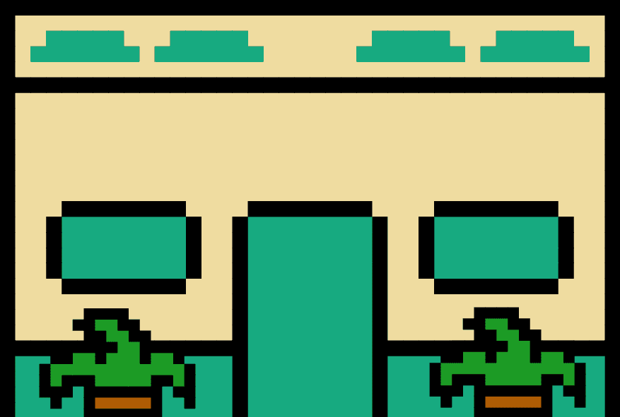

Click
Click Anywhere To Proceed
"¡Por Favor, Ellos No!"
"Son Liberales..."
"¿Por Que Los Proteje?"
"Son Mis Vecinos.."
"Y Son Buena Gente."
"Por Favor."
"Pido que perdonalos.."
"...."
"Bueno pues.. Los Perdono.."
"¡Pero Que Se Vayan Ahora!"
"Dejen la panaderia.."
"la casa.."
"y la otra familia.."
"Y que no vuelvan otra vez."
"¡Aqui no hay lugar para putos liberales!"
Was this bone a connection to a lost matriarch?
Or a symbol of all the violence done onto others ?
"El Dedo En El Baño" by Kevin Cadena
Story passed down by my abuela, Nidia Rincón
Dedicado a mis bisa-abuelos que dejaron todo para proteger a nuestra famila
Are you sure you caught everything...
Play Again?
Go Home
